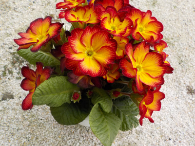
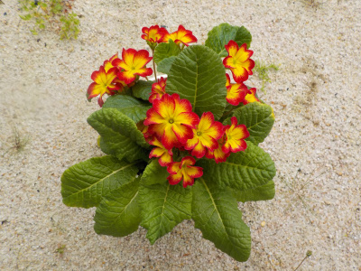
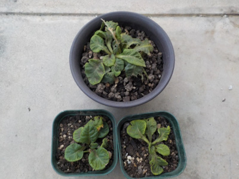
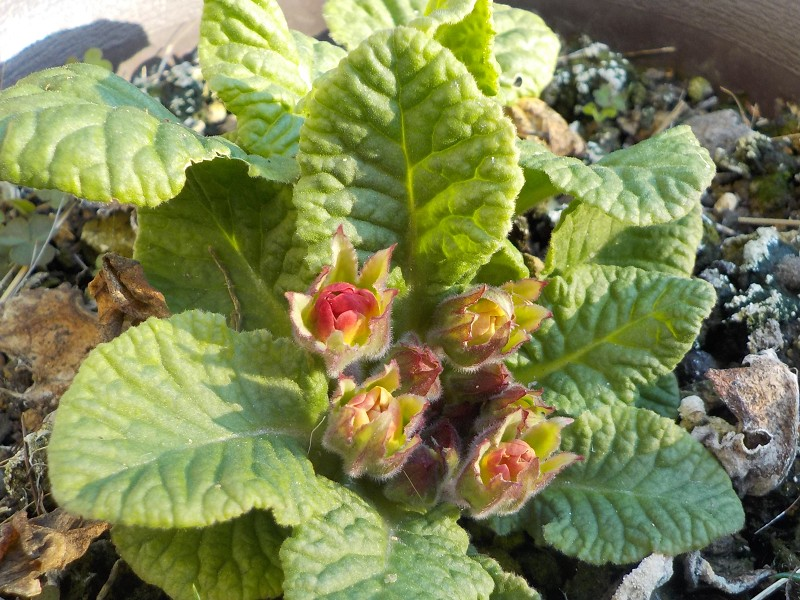
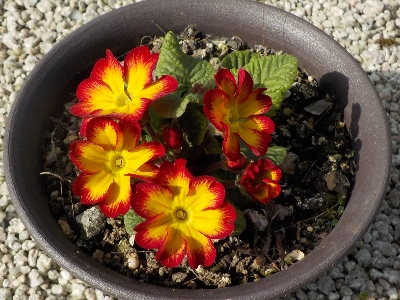
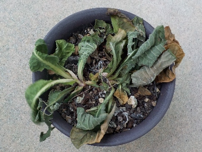
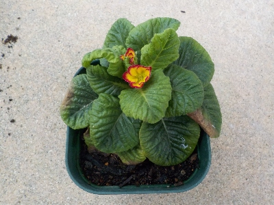

更新日 : 2023/02/26

プリムラをもらいました。
とりあえず花を楽しみます。このプリムラは花数が多いですね。見栄えがとってもいいです。
種採って増やしたいし、夏越しして来年も楽しみたいと思っています。計画通り行くかな？。
更新日 : 2023/05/13

以前から庭にあるプリムラは花が終わっているんですが、新しく入手したこのプリムラはまだ花が咲いています。
品種改良で花の期間が長いのかな？
花の時期が長いのはいいですね。後どれくらい咲き続けるんだろう。
更新日 : 2023/10/22

2株あって、1株夏を越しました。
葉っぱが出ている場所が3カ所に分かれていたので、茎を切って3つに分けました。
更新日 : 2024/02/17

去年の今頃このプリムラはもっと大きくて沢山開花していたんですが、今はまだ小さいです。
販売する前は温室にいたんだろうな。
近頃の品種は開花期間が長くなっているのかと思っていたんですが、温室のおかげだったんだ。
更新日 : 2024/03/03

小さい苗に小さい花がついてて、とってもかわいい。
大きく育って沢山の花を咲かせて欲しいとも思いますが、この状態でもいいかな。
更新日 : 2024/07/08

何かに食べられたのかな？根本らへんが折れた感じになって萎れてました。
再起は無理だな。

残ったこの鉢は生き延びて欲しい。
その後、残った鉢も枯れました。
園芸品種の花の長さは凄いね。
【おいしいものを食べよう。】【たくさん寝よう。】
【ソロ活をしよう!】【季節感のあることをしよう。】【動画視聴はほどほどに。】【当サイトの全てのコンテンツは無断転載禁止です。】